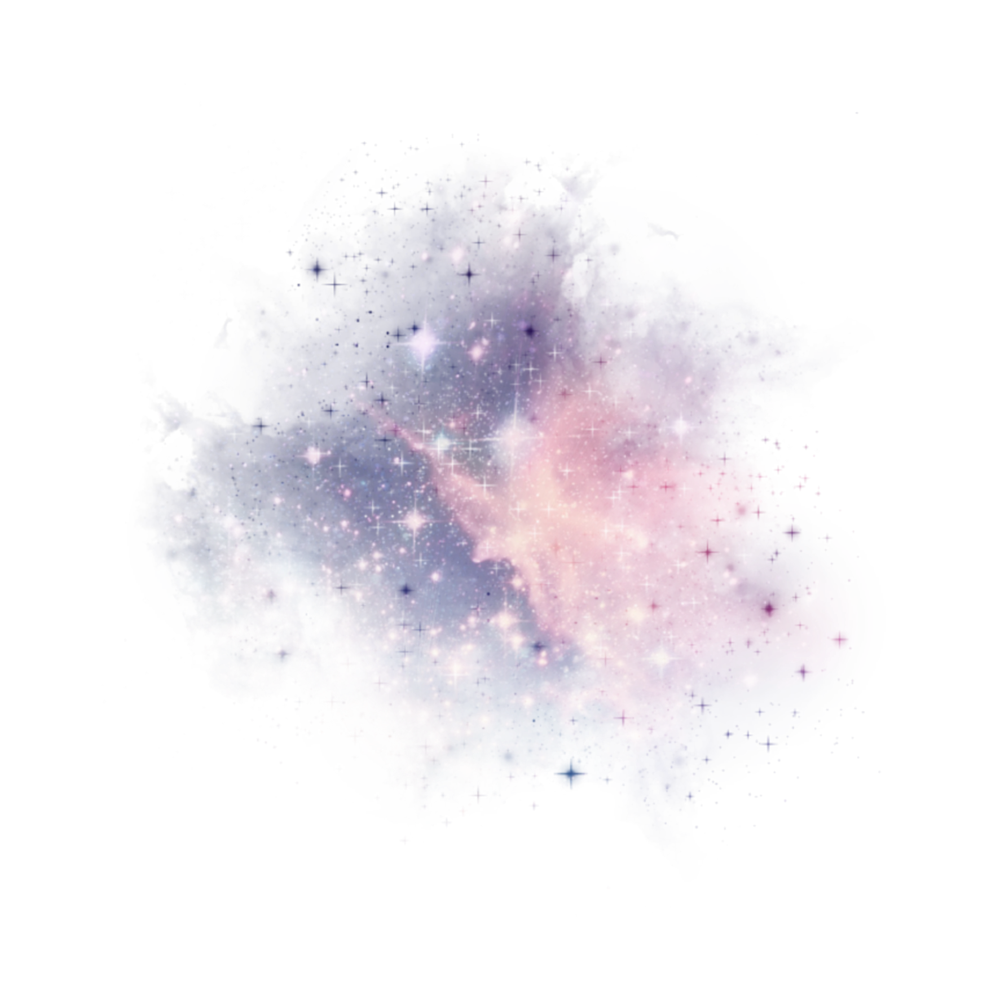

La Misión
-La misión consiste en acercar un dispositivo máximo posible al sol para hacer pruebas científicas¿Qué es la sonda?
-La sonda espacial es un aparato pensado para lanzarse desde un cohete al espacio exterior. Tiene un escudo para protegerse del calor del Sol, muchos sensores (como si fueran cámaras) y unos paneles solares para que no deje de funcionar.Objetivos de la misión
- Saber qué hay más allá de la corona Solar para saber cómo son las estrellas y qué nos mandan (a parte de luz)LANZAMIENTO
El lanzamiento de la sonda Parker fue en el año
2018
La ubicación del lanzamiento fue enFlorida (Cabo Cañaveral)
La Órbita
Una vez lanzada la sonda, hará un recorridoparecido al de los planetas, alrededor del Sol La sonda pasará
cerca de Venus para acercarse más al Sol

¡NOS BOMBARDEAN POLVOS ESPACIALES!

-Pequeños granos de polvo se estrellan a alta velocidad, lo que
provoca explosiones de plasma y nubes de escombros.
-El polvo dañino es muy pequeño, mide menos de
una cuarta parte del ancho del cabello humano.
-Los impactos hasta ahora no han sido lo suficientemente
grandes como para superar el blindaje de Parker.
¡Esto demuestra que fue construida para sobrevivir!
Velocidad de la sonda
La sonda Parker pasa cerca del sol a una velocidad de 700000km/h A esta velocidad se podría recorrer la distancia entre las ciudades de Tokio y Nueva York en menos de 11 minutos.
Viento solar
El viento solar son corrientes de partículas con carga eléctrica. El viento solar se libera de la corona solar y una velocidad suficiente como para el campo magnético(esto seía como si una brújula apuntara al sur en vez de al norte).Blindaje térmico
La sonda tiene un escudo térmico que permite que la parte más resistente al calor soporte solo 1400ºC. El escudo térmico proteje la parte sensible de la sonda para que no se caliente y se estropee.
This is my first slide